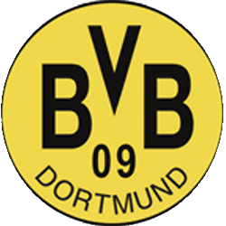
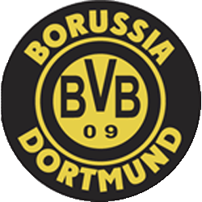
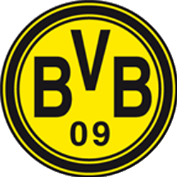
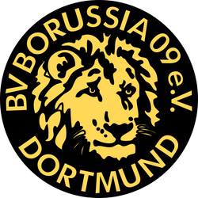
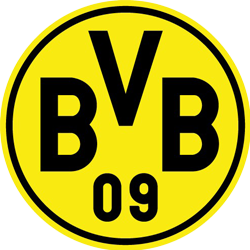

The History of
Borussia Dortmund
-

1909
- 노랑 바람의 시작
-
보루시아 도르트문트는 1909년 12월 19일 트리니티 유스의 불만이 많은 18명의 젊은이들에 의해서 창단되었다.
도르트문트에는 성당을 중심으로 한 지역 클럽이 자리잡고 있었으나, 그들은 지역 청년들의 진취적인 바람을 다 수용할 수 없었고,
18명의 젊은이들은 트리니티 유스를 떠나 구기 클럽 보루시아 09 도르트문트(Ballspiel-Verein Borussia 09 e. V. Dortmund)를 창단하였다.
도르트문트는 젊은이들에 의해 창단된 클럽인데, 그러다보니 재정적 자립도가 약할 수밖에 없었고,
기존의 틀을 깨고 새로운 클럽을 만들었던 탓에 투자를 하려는 사람들을 찾기도 쉽지 않았다.
또 창단 후 10년 정도가 지난 1920년대에는 적극적인 스폰서 유치로 인한 클럽의 덩치 키우기에 도전했으나,
이 역시 경험 부족으로 인해 참담한 실패만 맛본 채 막을 내리고 말았다. 당시 도르트문트의 도전은 클럽 파산 위기의 원인이 되는데,
자칫 클럽이 사라질 수도 있었던 극심한 재정난을 이겨낼 수 있었던 원동력은 처음 그들이 보여준 진취적 바람에서 나왔다.
-
1940
- 독일을 물들인 노랑 바람
-
한층 높아진 전력을 보유하게 된 도르트문트는 그때 당시 베스트팔렌 지역 최강으로 꼽히던 샬케04와도
어깨를 나란히 할 수 있는 수준에 이르렀다. 레비어 더비라 불리며 독일 내 최고의 더비 매치가 본격적으로
시작된 때 바로 이 시기다. 그렇게 승승장구를 시작한 도르트문트는 1947-48시즌 샬케04를 물리치고 베스트팔렌
지역을 대표해 전국 챔피언십에 참가하게 됐다. 처음으로 전국 대회의 맛을 알게 된 도르트문트는 다음인 1948-49시즌에도
베스트팔렌 지역을 대표해 전국 챔피언십에 출전했는데, 이때는 결승까지 오르는 괴력을 발휘하며 그 이름을 독일 전역에 알렸다.
그렇게 조금씩 베스트팔렌 지역을 넘어 독일 전역에 존재감을 과시하던 도르트문트는 꾸준한 강세를 보였고,
결국 1955-56시즌에는‘도이치 마이스터’란 이름 아래 창단 첫 독일 챔피언의 자리에 올랐다.
-
1970
- 첫번째 몰락과 힘겨운 시기들
-
순조로운 성공 가도를 달리고 있던 도르트문트는 처음 맛보는 성공에 취해 방만한 클럽 운영을 하게 되는데,
유러피언 컵위너스컵 우승과 분데스리가에서의 선전으로 지금껏 만져보지 못했던 막대한 자금을 얻었기 때문이었다.
성공에 눈이 먼 클럽 경영진은 쓸데없는 지출과 무작위 선수 영입을 일삼아 순식간에 금고를 바닥냈고, 도르트문트의 재정상황은 급격하게 악화되었다.
아직까지 경험한 적 없는 재정 위기와 마주친 도르트문트는 이후 급격한 내리막길을 타기 시작했다. 팀의 주축 선수들이 자금이 바닥난 팀을 떠났고,
그것이 직접적인 충격파로 작용해 성적까지 곤두박질치고 말았다.
-

1990
- 유럽에 퍼지는 노랑 바람
-
1996-97시즌 달성한 UEFA 챔피언스리그 우승이다.
도르트문트의 이 대회 우승이 특히 더 깊이 뇌리에 남았던 것은 뮌헨 올림피아슈타디온에서 열린 결승전에서
마주친 상대가 4년 전인 1992-93시즌 UEFA컵 결승에서 패배를 안겨준 유벤투스였기 때문이다.
당시 유벤투스는 프랑스 아트 사커의 지휘관인 지네딘 지단이 이끌고 있었는데,
도르트문트는 모두의 예상을 깨고 3-1로 승리하며 4년 전 UEFA컵에서의 패배를 설욕하는 동시에 클럽 역사상 최초로 빅 이어까지 품는 영광을 안았다.
또한 그것을 더해 그해 겨울에는 남미 클럽 우승팀과 격돌하는 인터컨티넨탈컵에서 남미 챔피언 크루제이루(브라질)를 격파하며 세계 최고의 클럽으로 등극하기도 했다.
당시의 도르트문트는 인기, 자금력에서 바이에른 뮌헨과 맞설 수 있었던 유일한 클럽이었다.
-

2000
- 두번째 시련
-
도르트문트에는 꿈도 희망도 없어 보이는 시즌의 연속이었다.
재정위기 속에서 2004-05시즌과 2005-06시즌 연속 7위를 기록하더니,
2006-07시즌에는 심지어 2부 리그로 추락할 위기에 빠지기도 했으며,
2007-08시즌에도 13위까지 순위가 떨어졌다. 클럽은 2005년 파산위기를 맞이하고 11유로에 달했던
클럽의 주식 가치는 80% 가까이 폭락했고, 선수 연봉도 20% 삭감해야 했다.
재정난으로 2006년 팀내 최고 유망주 다비드 오동코어를 레알 베티스로, 핵심 선수인 토마시 로시츠키를 아스날 FC로 이적시켜야 했고
2007년에는 핵심수비수 크리스토프 메첼더를 이적료 없이 레알 마드리드로 넘겨주었다.
-

2008
- 보루시아! 다시 한 번 일어서다
-
2008-09 시즌 슈퍼컵에서 FC 바이에른 뮌헨을 꺾으며 우승했고, 비록 UEFA컵에선 1라운드에서 우디네세 칼초를 만나 승부차기 끝에 탈락했지만,
분데스리가에서 최소패(5패)와 최소 실점 2위(37실점)로 6위를 차지하며 가능성을 보인 클롭은 뛰어난 전술적 능력은 물론이고 경기장 안에서의
열정적인 모습과 뛰어난 입담으로 선수단을 완벽히 장악했다. 그리고 스타 선수 영입과 유망주 발굴도 균형감있게 진행하며 1990년대 유럽을 강타했던 노란 바람을 다시 일으킬 준비를 착실히 수행했다.
그 결과 2009-10 시즌엔 도르트문트를 5위권에 진입시켰고, 그 다음 시즌인 2010-11 시즌에는 루카스 바리오스, 카가와 신지, 누리 사힌, 네벤 수보티치 등
여러 유망주들이 포텐을 터트리면서 10라운드 선두였던 돌풍의 팀 1.FSV 마인츠05를 꺾어 1위에 오른 뒤 시즌 끝까지 1위 자리를 놓치지 않았고 결국 32라운드에서
분데스리가 정상에 도르트문트의 노란 깃발을 꽂으며 7번째 우승을 확정지었다.
-
2011-2015
- 클롭감독과 함께 정상까지
-
2011-12시즌=DFB-포칼 챔피언/분데스리가챔피언
2012-13시즌=UEFA챔피언스리그16년만에결승진출
2013-14시즌=DFB-포칼준우승
2014-15시즌=도르트문트는 이번 시즌에서 포칼컵 우승과 유로파리그 진출을 목표로 하고 있다.
물론 포칼컵에서 우승을 한다면 자동으로 유로파리그에 진출하게 된다. 그러나 만약 도르트문트가 포칼컵 결승전에서 패하게 된다면
분데스리가에서 순위가 유로파 진출권 안에 들어서 가는 방법 밖에 없다. 그리고 벌어진 마지막 라운드 베르더 브레멘전.
다행히 가가와, 오바메양, 미키타리안의 골로 3:2 승리를 챙겼고 7위를 확정시키면서 포칼컵 우승여부와 상관없이 유로파 리그에 진출하는데 성공했다.
그러나 DFB-포칼 결승은 볼프스부르크에게 1-3으로 완패하면서 4번째 우승에 실패하고 볼프스부르크 팀 역사상 첫 DFB-포칼 우승 제물이 되어버렸다.
-

2016
- 투헬의 말벌 군단
-
클롭 감독 사임 발표 후, 토마스 투헬 감독은 바로 후계자로 낙점되었고,
2015-16 시즌부터 도르트문트를 맡게 되었다. 여담으로 클롭 감독과 똑같은 루트(마인츠 감독➡도르트문트 감독)로 왔다.
전술적으로 단조로운 모습을 보여주는 클롭 감독과 달리, 전술적 다양함을 구사하는 감독이라 다들 많이 기대하고 있다.
다만, 일부에서는 유럽 클럽대항전에 대한 경험이 전무하다는 점을 걱정하고 있다
-
2017
- 2시즌만에 투헬감독 교체 및 DFB-포칼 챔피언 등극
-
EPL 15-16시즌의 레스터 시티의 돌풍을 연상케 하는 RB 라이프치히의 엄청난 선전에 밀려 우승은 고사하고
2위마저 뺏기고 말았다. 그리고 시즌이 끝났지만 결국 마츠 후멜스의 공백은 메우지 못했다.
시즌 내내 상대팀에게 많은 골을 넣었지만 수비 라인의 불안으로 만만치않게 실점했으며 이에 따라 비긴 경기가 꽤 많았다.
그리고 선수들의 잦은 부상도 아쉬운 부분. 위에 서술한 마르코 로이스는 포칼 결승 도중 십자인대 부상을 당해 3개월 아웃 판정을 받았다.
그리고 대사장애를 진단받아 시즌 아웃된 마리오 괴체는 복귀가 문제가 아니라 선수 생명 자체가 걸린, 매우 중대한 상황에 놓이게 되었다.
그리고 득점왕이 된 피에르 오바메양이 이적 선언을 했다. 정말 타팀으로 이적한다면 공격진 공백이 매우 클 것으로 예상된다.
그리고 끝없이 보드진과 마찰을 빚어오던 토마스 투헬 감독이 불과 두 시즌만에 팀을 떠나게 됐다.
-
2021
- 4년 만에 메이저 트로피를 들어올리다!!
-
도르트문트의 경기력은 매우 좋았고, 라이프치히는 꽤 많은 것이 걸린 경기였음에도 경기력 자체가 좋지 않았다.
도르트문트는 시종일관 일방적으로 라이프치히를 몰아붙였고, 전반전에만 세골을 때려넣으며 완전히 제압해버린다.
후반전 다니 올모에게 한 골을 허용하긴 했지만, 라이프히치의 반격은 딱 거기까지였고, 홀란의 쐐기골이 터지면서 4:1의 스코어로 승리를 차지하게 되었다.
그리고 무려 4년 만에 포칼을 들어올리며 메이저 커리어 하나를 추가하게 되었다.